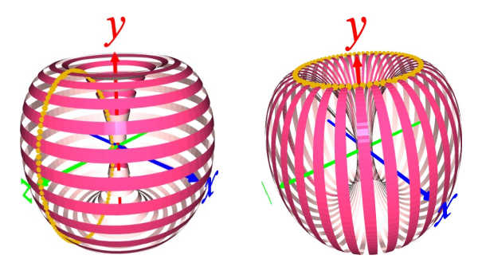
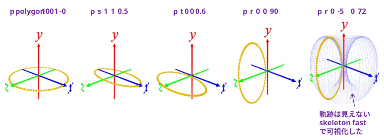
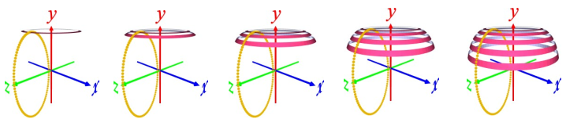

[1] 色の設定
オモテの色, ウラの色を設定する。
(例)
LateralOuter 255 64 128
LateralInner 255 200 200
[2] 円環状の点をスケーリング, 平行移動, 回転させて, りんごっぽい形状を作る
p polygon 100 1 -0 ･･･ 半径 1 円周上に 100 個のデータを作成。厚みは 0
p s 1 1 0.5 ･･･ z 方向を 1/2 にスケーリング
p t 0 0 0.6 ･･･ z 方向に 0.6 平行移動
p r 0 0 90 ･･･ z 軸周りに 90°回転
p r 0 -5 0 72 ･･･ y 軸周り -5°回転を72回繰り返す

[3] 横縞, 縦縞の設定
横縞の場合は, 何もせず[4]に進む。
縦縞の場合は、P2 を転置する。
p2 transpose
[4] 点の軌跡を部分的にメッシュ化
surface eclose 0 0 ･･･ 0層目をメッシュ化
surface eclose 2 2 ･･･ 2層目をメッシュ化
surface eclose 4 4 ･･･ (以下同様)
surface eclose 6 6
surface eclose 8 8
：

※ スクリプトはいかにある。
data/apple_yoko.txt
data/apple_tate.txt
※ メッシュ化したものを消す場合は
d ･･･ 直前にメッシュ化したものだけを消す
d all ･･･ すべてのメッシュを消す
※ ウラとオモテを入れ替えたい場合は
p2 reverse e ･･･ 押し出し方向の並びを逆順にする
とする。
[5] その他
p disp off ･･･ Points[ ] のマーカーを消す
p disp on ･･･ Points[ ] のマーカーを表示させる
axis ･･･ 座標軸を表示する/消す
save (.plyファイル名) ･･･ メッシュ化したものをセーブする
p2 save (.npyファイル)･･･ メッシュ化前の P2データをセーブする